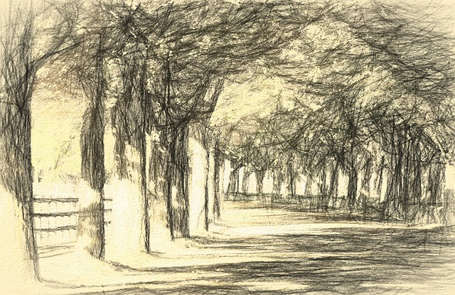

Ahn Seojun – 안서준

- 1988年： 釜山広域市生まれ
- 2010年： 韓国芸術総合学校美術学部 卒業（現代美術専攻）
- 「하늘의 선（空の線）」プロジェクト参加
- 2011年： 「빛의 흔적」個展（釜山アートギャラリー／釜山）
- 2012年： ソウル・弘益大学ギャラリー「공간과 소리」展
- 2013年： 大邱現代アートフェア（Daegu Contemporary Art Fair）参加
- 2014年： 韓国現代彫刻協会新人賞 受賞
- 「선과 빛의 대화（線と光の対話）」展（モウォン・ガラス館）
- 2015年： 「반사되는 기억」グループ展（ソウル・麻浦区ギャラリー）
- 2016年： 釜山国際アートフェスティバル 招待作家
- アート誌《MODU Contemporary》特集掲載
- 2017年： ソウルデザインフェスティバル 特別展示
- 2018年： 個展「光と影の迷宮」（ソウル・江南区ギャラリー）
- 2019年： 「都市の息遣い」グループ展（大邱現代美術館／大邱）
- 2020年： Studio EUNOにて作品発表「반복되는 하루」
- 2021年： ソウルアートフェスティバル 特別賞 受賞
- 2022年： 個展「시간의 틈」開催（ソウル・麻浦区）
- 2023年： 大邱現代アートフェア 特別展示